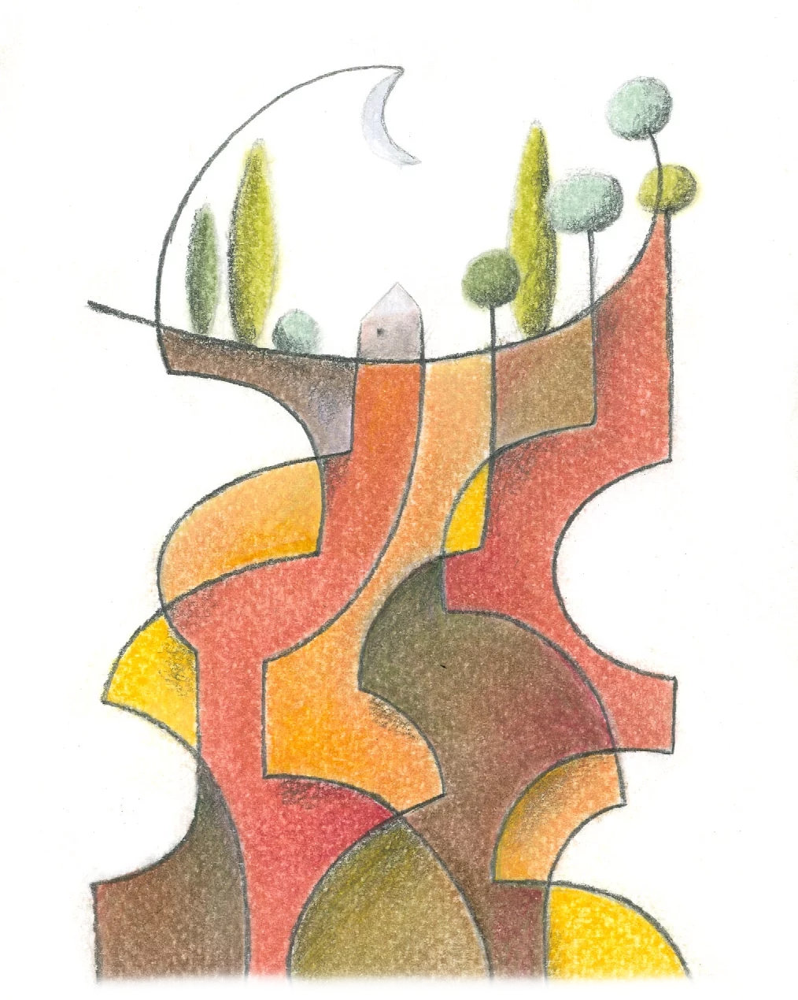
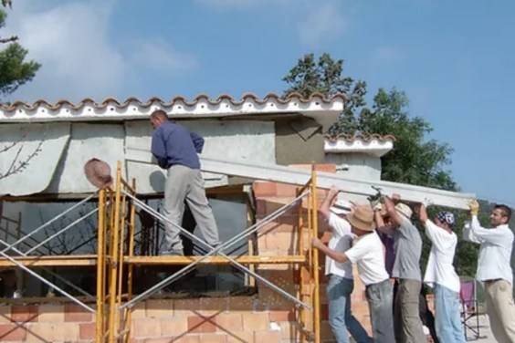
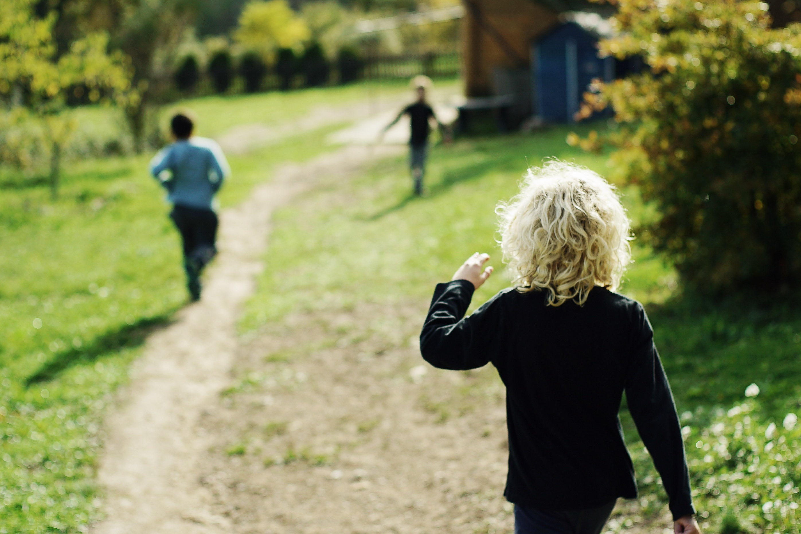
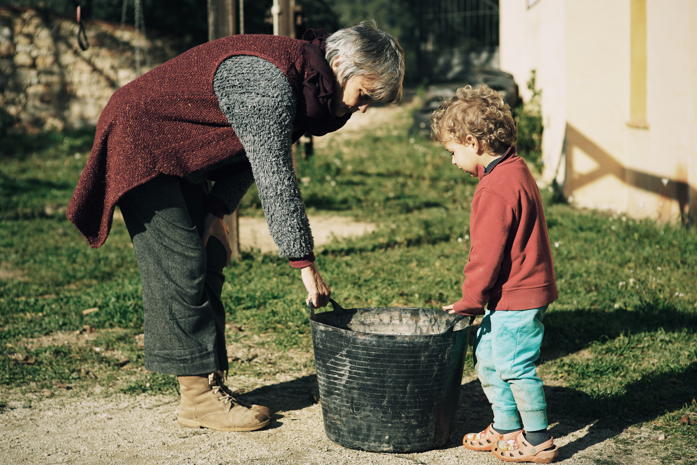

Cimientos
La práctica pedagógica de El Roure se sostiene sobre la base conceptual que guía permanentemente la investigación pedagógica propia a través de la experiencia cotidiana con los niños y niñas y sus familias. Esta base conceptual se inspira en diversos referentes, los más importante de los cuales son el Seitai y la Sistémica. Encontramos afinidades parciales con otros referentes de la pedagogía del s. XX como Montessori, Neill, Makarenko, Vygotski, Freinet, Piaget, Pikler, Malaguzzi, Freire, Illich, Holt, Wild, etc.


La escuela El Roure inició su trayectoria en 2001 en una finca rústica del Alt Penedés (Barcelona). La fundaron Begoña González y Cristóbal Gutiérrez, como un paso más en la evolución de su concepto de escuela viva, después de fundar La Casita en 1996 en el barrio de Gràcia de Barcelona.

La autoregulación espontánea;
el contacto con la naturaleza propia.
El organismo humano, como cualquier otro organismo vivo, dispone de una gran capacidad involuntaria que es esencial para la vida: digirirse hacia satisfacer sus necesidades fundamentales. Es una capacidad de autoregulación entre la necesidad interna y el entorno, de manera que sea posible decidir lo más adecuado para mantener, en toda su amplitud, la vitalidad que le es propia y hacer crecer el potencial que lleva dentro.
Además, cada uno de nosotros es único; tiene necesidades y prioridades propias, una mirada particular, una manera de vivir y de entender la existencia, de relacionarse con los demás, una manera de aprender, un ritmo vital. Nuestro eje de atención básico es el contacto con estas dos vertientes de la naturaleza humana.

El acompañamiento cuidadoso;
el marco necesario para el crecimiento.
Los infantes y los adolescentes necesitan un marco de confianza, referencia y seguridad emocional de los adultos para poder ser felices y hacer crecer su potencial vital.
El espacio básico de relación entre los adultos y los infantes o los adolescentes requiere que básicamente se tenga cuidado de una comunicación profunda; la escucha, la libertad para decidir en los ámbitos de exploración y aprendizaje, el ambiente que fomente una consciencia de colectividad y los límites concretos y claros, a través de una intervención respectuosa dirigida a las verdaderas necesidades de la criatura.

Aprender
desde el deseo innato.
Como seres humanos disponemos de una inmensa capacidad innata de aprendizaje autónomo que se activa a través del diálogo permanente entre el deseo interno y el entorno y que es posible mantener a lo largo de toda la vida. Cada uno de nosotros tiene una manera y un ritmo de aprendizaje que nos es propio, en comunicación permanente con nuestra naturaleza y nuestro momento vital. En El Roure es fundamental respetar y cuidar de este impulso interno en relación con un ambiente rico en situaciones y experiencias de aprendizaje.